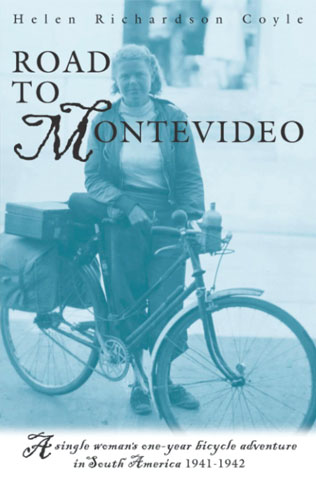

Helen Richardson, a single woman of 27, embarked on a very unique adventure on November 21, 1941. With war raging in Europe and about to begin in the Pacific, she set sail from San Francisco, California, in a banana boat for South America, where she would spend a year cycling on her own. First a short trip through Panama and then on to Valparaiso, Chile, where she began a much longer journey that would take her over the Andes, across the Argentine Pampas to Buenos Aires and finally to Uruguay. Her trip was abruptly cut short in Uruguay, where she was detained for two weeks in Sept. 1942 on suspicion of being a Nazi spy. After 6,000 miles of cycling, she was ordered to return to the United States by the U.S. State Department, thus ending a year early her planned two-year adventure.
Helen was born in California in 1914 to Martha and Walter Richardson. Both of her parents were of prominent lineage: her mother was a Bebb, daughter of a noted botanist and the granddaughter of William Bebb, the Governor of Ohio in 1984 – 1849 and an appointee in the Lincoln Administration. A first cousin on her mother’s side, Norman Mason, was Administrator of the Housing and Home Finance Agency during the Eisenhower Administration. Her father was an eastern transplant whose uncle, John Pierce, was a founder of the American Radiator and Standard Sanitary Co. (now American Standard Co.). Pierce had no children and willed part of his fortune to his stepsister, Helen’s grandmother Richardson. This legacy was a source of family wealth that helped support Helen’s travels at a time when others were struggling to make ends meet.
Helen grew up on a citrus ranch outside the small town of Porterville, on the eastern edge of the San Joaquin Valley and in the foothills of the Sierra Nevada.
She got the travel bug from her family, particularly her father and two brothers. Her father traveled extensively in California and the Sierras and worked as an engineer for several years in the gold mines of South Africa, circling the globe going to and coming from South Africa in 1897 – 1903. One of her brothers, William, was a member of the Archbold Expedition to New Guinea in 1938 – 1939. Her older brother, Hilton, traveled extensively in Central America and Africa and encouraged his younger sister to join the boys on camping trips in the Sierras. Helen herself had already cycled in Europe (July – December 1939) and in Japan and China (June – August 1940) before her trip to South America.
Her father gave her encouragement and financial support. When she was considering a choice between work and a South American jaunt, her father advised…
Get your South American trip first. That is my advice. For why? Because you can always get a job, but you can’t always go to South America. For why? – One look at your brothers and sister tell the tale. They can’t travel now because of jobs, family, etc., etc., etc. Sabe? Some people better stay home than travel, but not you. You will be a better teacher or anything you may want to do for having had it. You will learn better how to live and enjoy what you have by seeing how others do it.
In preparation for her trip, she gathered together a variety of documents to assurea successful trip, including a passport, membership cards with the American Bicycle League and the Pacific Northwest Cycling Assn. (Seattle Chapter), a 1941 pass for the American Youth Hostels, documents of good health, and a certificate of inoculation against cholera. She also carried letters from the Bank of America, vouching for her financial responsibility as “the daughter of one of the most substantial local citrus growers,” and from the City of Porterville, certifying that she was a person of good moral character and principle” and had never violated any laws or ordinances. She also meticulously planned what clothing and other effects to carry with her since she was seriously constrained by a small set of saddlebags and a diminutive overnight case that fit on the back of her bicycle. It was surprising what she was able to pack in those two small pieces: mechanic’s equipment for a bicycle, a first aid kit, and a lady’s wardrobe for all climates and social occasions. She also embarked with a small amount of cash (15 one dollar bills) and $800 in traveler’s checks, which was supplemented later in her trip by an additional $1000. Her bicycle was a Raleigh three-speed, which she named “Chester,” after the English town where she bought it two years before.
Many years after her bicycle journey in 1941 – 1942, she married William E. Coyle and had six children (Anne, William, Walter, Richard, Marti, and Rob). She passed away in 2003.
by Patrick Gilsenan
Sitting comfortably in her wheel chair in an Arlington nursing home, you’d have no idea Helen Richardson Coyle was once kicked out of Latin America on suspicion of being a spy.
She wasn’t a spy, of course, but the year was 1942 and the authorities didn’t know what else to make of a fiercely independent 27-year-old woman pedaling alone through the backwoods of Uruguay. They’d never seen such a woman before.
Women didn’t often travel alone in 1942 and they certainly didn’t travel on bicycles along back roads of developing counties.
But Coyle was not like most women. She had inherited her family’s lust for travel and exploration which included a father who spent six years at the turn of the century circling the globe and a brother who was among the first white men to visit the native tribes of New Guinea in a late 1930’s expedition.
She wasn’t going to let the fact that she was a woman stop from her from having her own adventures.
So in 1941, she grabbed her Raleigh three-speed and decided to spend two years pedaling the gravel and dirt roads of South America.
“I didn’t plan on anything. I just had my idea of seeing the country and pedaling my bike,” Coyle, now 86, recently told SPOKES.
Though she didn’t consider herself or her trip a feminist statement, a single woman traveling alone by bicycle in a foreign speaking country was undeniably radical for the time.
“They thought I was a little off track … they didn’t think (such a trip) was anything anybody wanted to do,” she remembered of friends’ reactions. “They couldn’t understand how my mother and father could allow such a thing.”
But Coyle had previously spent summers cycling in Japan and Europe and, with an adventurous spirit of their own, her parents supported her idea.
So she left her family’s ranch in Porterville, Calif., in mid-November 1941 and jumped aboard a banana boat bound for Panama as the only passenger on a nine-day voyage.
With war raging in Europe and soon to reach the Pacific, Coyle arrived in Panama to high powered search lights scouring the sea and military aircraft buzzing overhead.
Coyle spent three weeks exploring Santa Clara and Panama City before cycling to the Atlantic city of Colón where she began her trip in earnest aboard a second ship bound for Valparaiso, Chile.
It was on that 12-day journey that Coyle first encountered a trend that remained throughout her trip: men happy to, shall we say, assist a single woman traveling alone.
“They were … persistent,” Coyle jokes. (But) there was nobody that was very intrusive. I didn’t have any experiences like that … I just said ‘good bye’ and rode on.”
Coyle arrived in Valparaiso, Chile, Jan., 2, 1942 and pedaled down the coast before heading back inland for Santiago where she joined protests denouncing the Nazi regime and enrolled in a two-week program at the University of Chile in an effort to learn Spanish.
For her trip, Coyle brought only what she could fit in two saddlebags and a briefcase-size piece of luggage that fit on the back of her bike.
She also had a basic set of tools and patch kits which she used regularly along bumpy, unpaved roads. When something broke, she said, she simply taught herself to fix it.
Promising her mother she would sleep in secure locations, Coyle choose not to camp and planned her days along routes that would lead to the next town by night fall. Coyle’s family back home in California’s San Joaquin Valley had become wealthy through a relative who was a founder of what is now the American Standard Company. The money helped support Coyle’s travels. Between towns, however, Coyle ventured off the beaten path as often as possible.
“(The backroads) took me out to into country that wasn’t so spoiled with humanity,” she said. And each new town brought out curious folks happy to talk and share with the North American woman on the bicycle.
After Santiago, she began a five-day ride over the Andes mountains headed for Mendoza, Argentina. Her journey over the Andes was an odyssey including bread and tea with an isolated telegraph operator high in the mountains, and an evening in the Puenta Del Inca Army barracks and another in the grand Hotel Portillo.
She rode for 300 miles, even pushing her bike uphill to a peak of 12,000 feet.
After leaving the Andes she headed for Cordoba, Argentina, where she encountered another trend of her trip: police asking lots of questions. As war had now moved to the Pacific, authorities had grown more suspicious.
“Two new officers questioned me,” she wrote in her diary at the time. “Why was I in Argentina? Why was I alone? (they asked) … And my simple answer that I travel only because I love to travel seemed entirely too simple for their grave implications of these questions. They told me frankly they suspected me of having an interest in the politics of their country.”
After only one afternoon’s delay in Cordoba, however, police agreed to allowed Coyle to continue en route to Buenos Aires and a two-month stay with her female cousin and her cousin’s well connected Argentinean family.
As Coyle was the great granddaughter of former Ohio Governor William Bebb, she was not intimidated by her time among Argentine’s high society.
After more than two months – July and August, 1942 – in Buenos Aries, Coyle left Argentina planning to travel to Montevideo and then on to Rio de Janeiro.
The political climate changed quickly, however, as she cycled into Uruguay. She was questioned twice by police during her first three days in the country and on September 3 she was stopped by local authorities, questioned and taken to the local police station where she was further questioned repeatedly the rest of the day. She was then escorted to a second police station were the questioning continued.
Though she didn’t know it yet, her trip was about to come to an end.
“A man with keys was waiting. Tired from a lack of food and an afternoon of grilling, I lost control and gave up to tears which came in spite of me. Why was I being held? What had I done?,” she wrote in her journal at the time. “Down a long hall of barred rooms I was led, then a door was opened and (my bike) and I were ushered inside. A clanking of steel, a turning of a key in a lock, and for the first time in my life I knew the meaning of the loss of liberty. And I felt utterly hopeless and alone.”
Before dawn, police roused her from her sleep and transported her back to Montevideo where a crowd of reporters and photographers awaited her arrival.
A second day of questioning followed, included inquiries from a representative from the U.S. Embassy. Authorities confiscated her papers to prevent her from leaving the city while they decided her fate.
By the next morning the bicycling “North American spy” was on the front page of all of the city’s newspapers. Coyle spent the next 10 days dodging photographers as she fought to be allowed to continue on her journey.
On September 17, 1942, however, she was informed that the U.S. State Department had requested her immediate return.
“It made me mad, because they cut short the things I wanted to do … (but) there was nothing I could do,” she said.
Though she had planned to spend a second year in South America, she spent her remaining money on a plane ticket home with short, sight-seeing stops in Peru, Columbia and Mexico. She arrived back in California two months later.
Despite the abrupt end to the trip, the journey was one of the highlight of Coyle’s young traveling days.
“For a whole year I lived a happy, irresponsible life, pedaling from one country to another and living with the constant joy of activity, the beauty of an ever changing landscape, the warmth of strangers hospitality. And I loved it all,” she concludes her diary.
After returning to the states, Coyle joined the Red Cross and was shipped to New Caledonia to run a donut factory for locally stationed U.S. Troops. She met her future husband, William E. Coyle, a navy sailor, while in New Caledonia.
The two moved to Washington in 1945 where he worked for the Washington Star and later for the Washington NBC affiliate as director of advertising and public relations. Helen Coyle settled down to life as a full-time mom to six children.
And now, living a quiet life, the bike and travel long gone, she still smiles when she thinks of her love of far off places.
“Just the freedom of going out on the road, no destination no obligations, just rolling … I don’t think (that desire) ever goes out.”
In 1997, Coyle’s son William, a 53-year old economist from Alexandria, discovered his mother’s trip journals and compiled them into a book: Road to Montevideo: A single woman’s one-year bicycle adventure in South America 1941-1942.

Price: $12.95
To Order: contact Bill via the contact form
Summary: Helen Richardson, a single woman of 27, embarked on a very unique adventure on November 21, 1941. With war raging in Europe and about to begin in the Pacific, she set sail from San Francisco in a banana boat for South America, where she would spend a year cycling on her own. First a short stop at Panama and then on to Chile, where she began a journey that would take her over the Andes, across the Argetine Pampa to Buenos Aires and finally to Uruguay. Her trip was abruptly cut short in Uruguay, where she was detained for two weeks in Sept. 1942 on suspicions of being a Nazi spy. After 6,000 miles of cycling, she was ordered to return to the United States by the U.S. State Department, thus ending a year early her planned two-year adventure. This is the story of a fiercely independent woman, undertaking the adventure of her life, a journey rarely heard of even today.
Product Details: